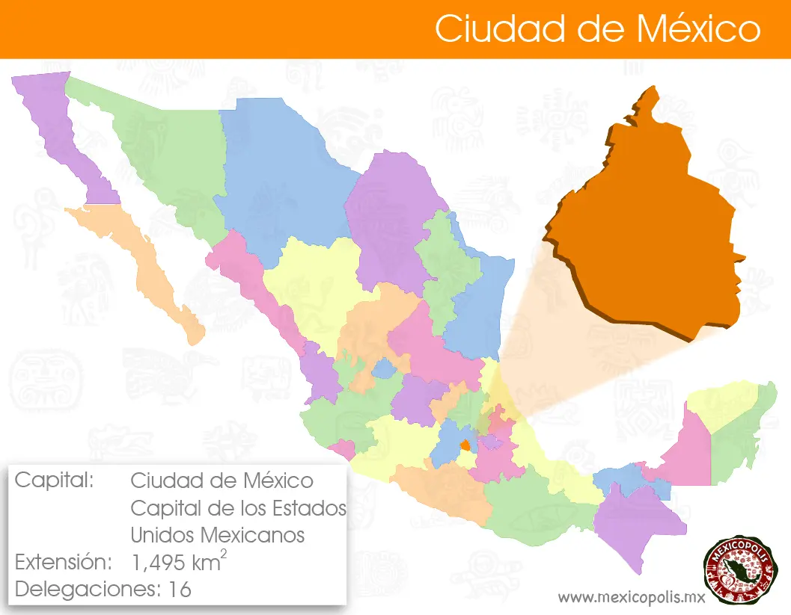

La historia de la Ciudad de México es un fascinante viaje a través del tiempo. Fundada en 1325 por los mexicas como Tenochtitlán, la ciudad se erigió en un islote del lago de Texcoco. En 1521, tras la conquista española liderada por Hernán Cortés, Tenochtitlán fue destruida y sobre sus ruinas se construyó la Ciudad de México, que se convirtió en la capital del Virreinato de la Nueva España12. Durante la época colonial, la ciudad floreció como un centro político, económico y cultural. Tras la independencia de México en 1821, la Ciudad de México continuó siendo la capital del país. En el siglo XX, experimentó un crecimiento explosivo, transformándose en una de las metrópolis más grandes y dinámicas del mundo12. Hoy en día, la Ciudad de México es un vibrante crisol de historia y modernidad, donde los vestigios de su pasado prehispánico y colonial coexisten con rascacielos y una vida urbana bulliciosa12.
La Ciudad de México, en la actualidad, es una metrópolis vibrante y multifacética. Es el corazón político, económico y cultural de México, donde la historia antigua se entrelaza con la modernidad. Con sus imponentes rascacielos, bulliciosos mercados, museos de clase mundial y una escena gastronómica diversa, la CDMX ofrece una experiencia única. Además, su rica herencia cultural se refleja en cada rincón, desde las ruinas aztecas hasta las elegantes avenidas coloniales. Es una ciudad que nunca duerme, llena de vida y energía, donde cada día trae nuevas oportunidades y descubrimientos.
Te gustaría saber más acerca de los sitios más impactantes de la CDMX, ingresa aquí y descúbrelos
Queremos saber más acerca de tus dudas, habla con nosotros